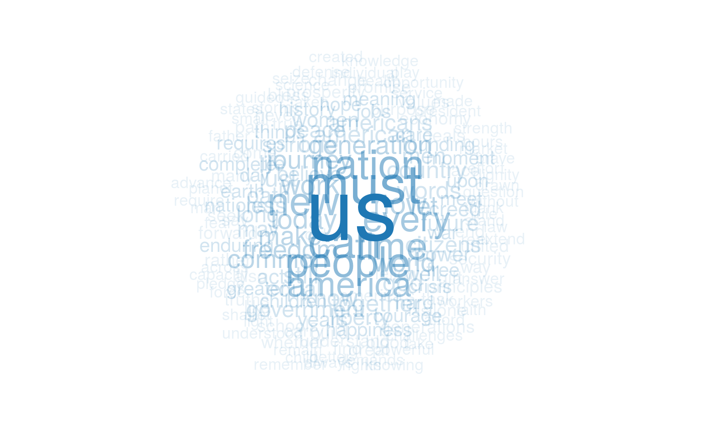
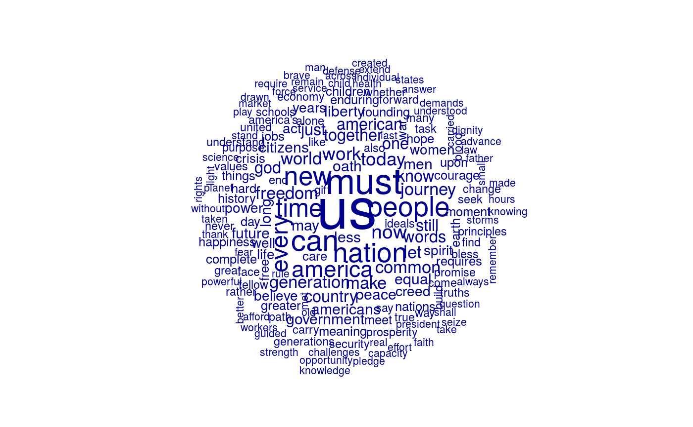

Plot a dfm or textstat_keyness object as a wordcloud, where the feature
labels are plotted with their sizes proportional to their numerical values in
the dfm. When comparison = TRUE, it plots comparison word clouds by
document (or by target and reference categories in the case of a keyness
object).
textplot_wordcloud( x, min_size = 0.5, max_size = 4, min_count = 3, max_words = 500, color = "darkblue", font = NULL, adjust = 0, rotation = 0.1, random_order = FALSE, random_color = FALSE, ordered_color = FALSE, labelcolor = "gray20", labelsize = 1.5, labeloffset = 0, fixed_aspect = TRUE, ..., comparison = FALSE )
Arguments
| x | a dfm or textstat_keyness object |
|---|---|
| min_size | size of the smallest word |
| max_size | size of the largest word |
| min_count | words with frequency below min_count will not be plotted |
| max_words | maximum number of words to be plotted. The least frequent
terms dropped. The maximum frequency will be split evenly across
categories when |
| color | color of words from least to most frequent |
| font | font-family of words and labels. Use default font if |
| adjust | adjust sizes of words by a constant. Useful for non-English words for which R fails to obtain correct sizes. |
| rotation | proportion of words with 90 degree rotation |
| random_order | plot words in random order. If |
| random_color | choose colors randomly from the colors. If |
| ordered_color | if |
| labelcolor | color of group labels. Only used when |
| labelsize | size of group labels. Only used when |
| labeloffset | position of group labels. Only used when
|
| fixed_aspect | logical; if |
| ... | additional parameters. Only used to make it compatible with wordcloud |
| comparison | logical; if |
Details
The default is to plot the word cloud of all features, summed across documents. To produce word cloud plots for specific document or set of documents, you need to slice out the document(s) from the dfm object.
Comparison wordcloud plots may be plotted by setting comparison = TRUE, which plots a separate grouping for each document in the dfm.
This means that you will need to slice out just a few documents from the
dfm, or to create a dfm where the "documents" represent a subset or a
grouping of documents by some document variable.
Examples
# plot the features (without stopwords) from Obama's inaugural addresses set.seed(10) dfmat1 <- dfm(corpus_subset(data_corpus_inaugural, President == "Obama"), remove = stopwords("english"), remove_punct = TRUE) %>% dfm_trim(min_termfreq = 3) # basic wordcloud textplot_wordcloud(dfmat1)# plot in colors with some additional options textplot_wordcloud(dfmat1, rotation = 0.25, color = rev(RColorBrewer::brewer.pal(10, "RdBu")))# other display options col <- sapply(seq(0.1, 1, 0.1), function(x) adjustcolor("#1F78B4", x)) textplot_wordcloud(dfmat1, adjust = 0.5, random_order = FALSE, color = col, rotation = FALSE)# comparison plot of Obama v. Trump dfmat2 <- dfm(corpus_subset(data_corpus_inaugural, President %in% c("Obama", "Trump")), remove = stopwords("english"), remove_punct = TRUE, groups = "President") %>% dfm_trim(min_termfreq = 3) textplot_wordcloud(dfmat2, comparison = TRUE, max_words = 300, color = c("blue", "red"))# for keyness tstat <- tail(data_corpus_inaugural, 2) %>% dfm(remove_punct = TRUE, remove = stopwords("en")) %>% textstat_keyness(target = 2) textplot_wordcloud(tstat, max_words = 100)textplot_wordcloud(tstat, comparison = FALSE, max_words = 100)